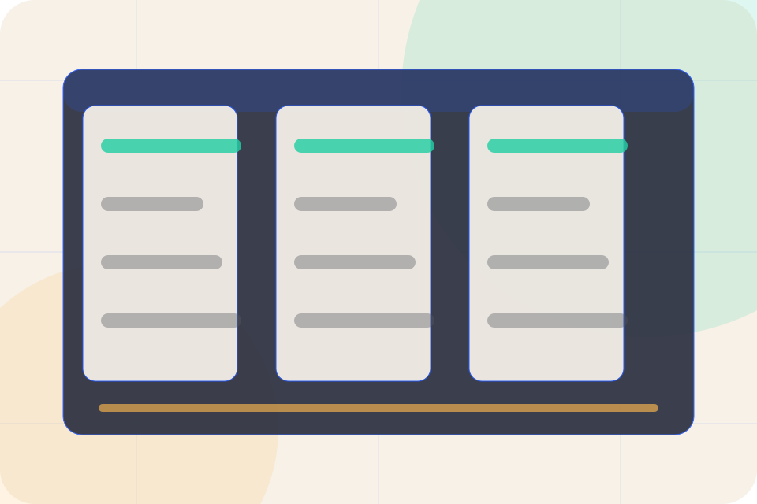

Start
How visitors begin this route and what detail is useful at the first step.
Contact / 02
Audit explains the operating sequence so visitors can see how the first request becomes a clear recommendation and follow-up.
The steps are written from the visitor side: what they do first, what Prism clarifies, what they receive, and how support continues.
Plan DashboardHow visitors begin this route and what detail is useful at the first step.

What Prism reviews, filters, or explains before recommending the next move.

What the visitor receives afterward, including support, proof, or a handoff to the next page.
Contact / 03
Dashboard makes the contact path concrete: what to send, how the response works, and what Prism needs before visitors plan a dashboard.
The section reduces contact friction by naming the channel, expected detail, privacy path, and response expectation instead of dropping visitors into a generic form.
Plan DashboardWhat information helps Prism respond with a useful answer instead of a generic reply.
How the visitor should think about response, urgency, location, or availability.
The expected next message keeps scope, timing, and the first practical step clear.
Metadata dashboard hero
Select the closest route and Prism keeps the next step, proof, and follow-up expectation aligned with decision clarity and visibility.
Contact / 04
Training explains the operating sequence so visitors can see how the first request becomes a clear recommendation and follow-up.
The steps are written from the visitor side: what they do first, what Prism clarifies, what they receive, and how support continues.
Plan DashboardHow visitors begin this route and what detail is useful at the first step.
What Prism reviews, filters, or explains before recommending the next move.
What the visitor receives afterward, including support, proof, or a handoff to the next page.
Contact / 05
Quote converts customer proof into a useful buying signal: the problem, the experience, and what changed afterward.
Proof stays believable by focusing on situation, service experience, and practical change rather than vague praise or unsupported results.
Plan DashboardPrism structures quote around situation, experience, and a clear next route so visitors can compare the block quickly before they plan a dashboard.
Plan DashboardContact / 06
Form makes the contact path concrete: what to send, how the response works, and what Prism needs before visitors plan a dashboard.
The section reduces contact friction by naming the channel, expected detail, privacy path, and response expectation instead of dropping visitors into a generic form.
Plan DashboardPrism keeps form practical: send the key details, choose the right contact route, and know what kind of reply to expect.
Plan Dashboard
Contact / 07
Phone makes the contact path concrete: what to send, how the response works, and what Prism needs before visitors plan a dashboard.
The section reduces contact friction by naming the channel, expected detail, privacy path, and response expectation instead of dropping visitors into a generic form.
Plan DashboardWhat information helps Prism respond with a useful answer instead of a generic reply.
Contact / 08
Response makes the contact path concrete: what to send, how the response works, and what Prism needs before visitors plan a dashboard.
The section reduces contact friction by naming the channel, expected detail, privacy path, and response expectation instead of dropping visitors into a generic form.
Plan DashboardWhat information helps Prism respond with a useful answer instead of a generic reply.
How the visitor should think about response, urgency, location, or availability.
The expected next message keeps scope, timing, and the first practical step clear.
Contact / 09
Submit makes the contact path concrete: what to send, how the response works, and what Prism needs before visitors plan a dashboard.
The section reduces contact friction by naming the channel, expected detail, privacy path, and response expectation instead of dropping visitors into a generic form.
Plan DashboardWhat information helps Prism respond with a useful answer instead of a generic reply.
How the visitor should think about response, urgency, location, or availability.
The expected next message keeps scope, timing, and the first practical step clear.
Contact / 10
Prism closes the contact route with a clear action, a quick reminder of the value, and a low-friction way to plan a dashboard.
Visitors who are ready can use the primary action. Visitors who are still comparing can scan the section links, proof, and support routes before they plan a dashboard.
Plan DashboardThe final block keeps the choice simple: act now, compare one more proof route, or send enough detail for a focused response.
Plan Dashboarddecision clarity and visibility
A data catalogue experience with friendly dashboards, metadata proof, search panels, and AI-context positioning. Contact ends with a direct path to plan a dashboard, plus enough context for visitors who still need to compare.
Information is provided for planning and should be reviewed for the final client, location, and operating rules.